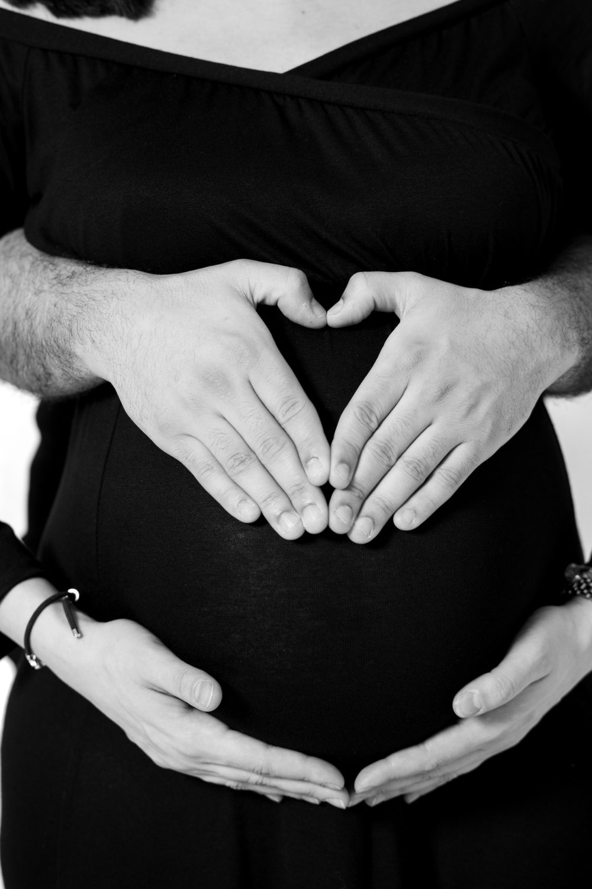
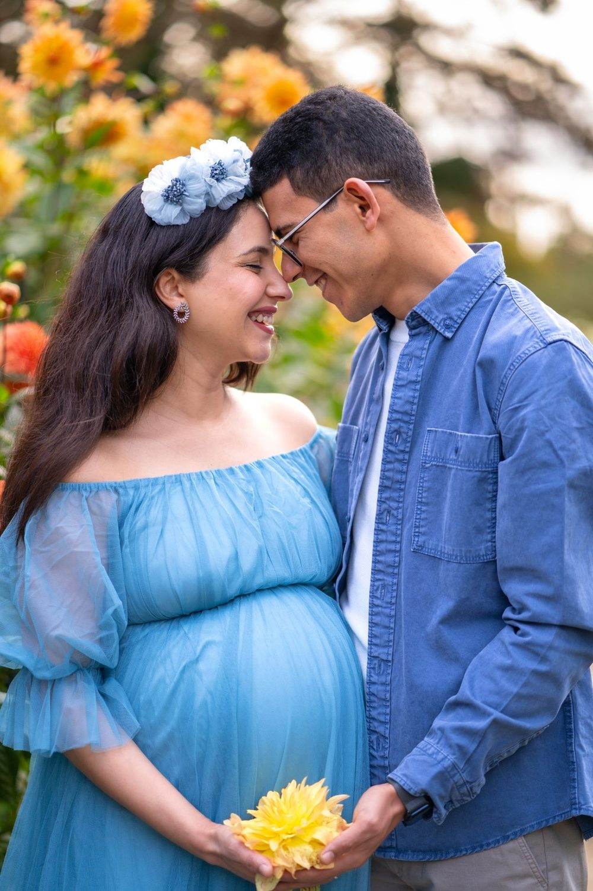
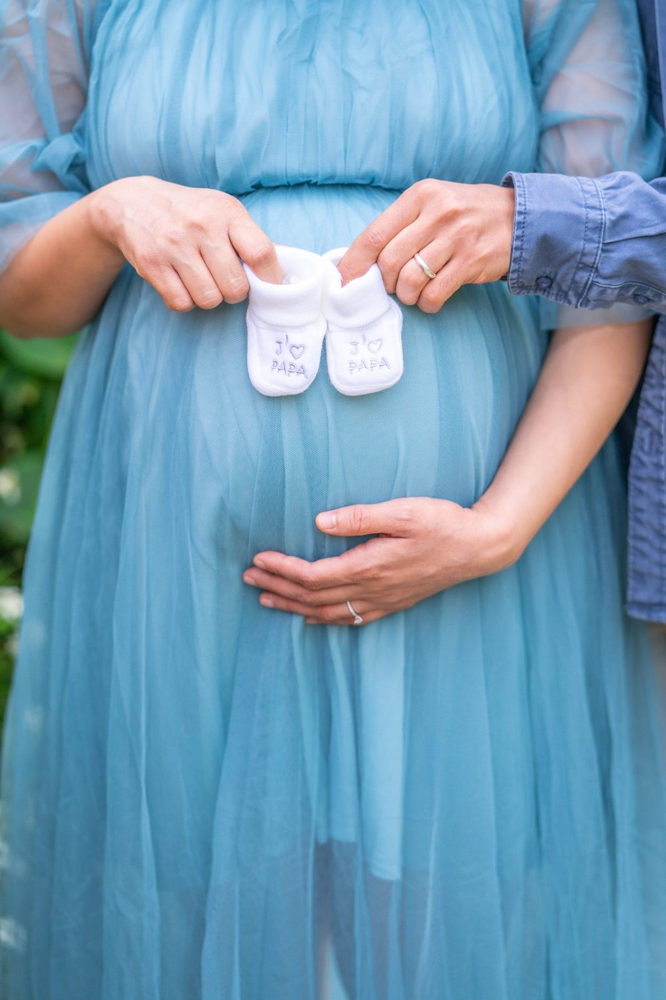
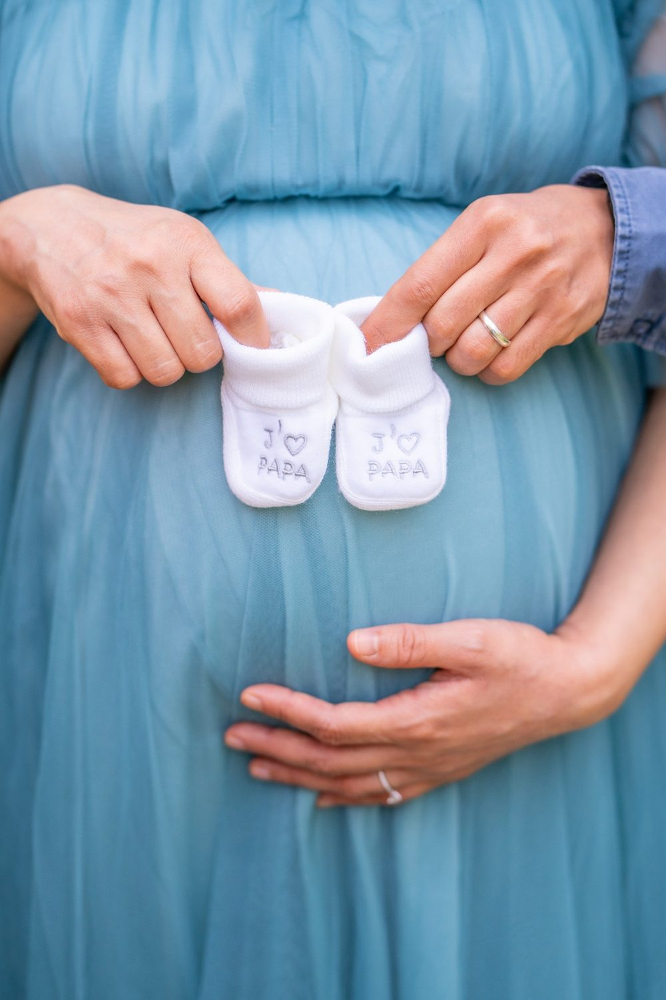

Séance photo grossesse à Barbizon
Une séance grossesse garde ce temps d'attente, le ventre arrondi, les mains qui se posent dessus, les mots que vous murmurez au bébé. Une séance à Barbizon, c'est aussi la possibilité de varier les ambiances entre Forêt de Fontainebleau et Plaine de Chailly.

Où faire votre shooting
Pour un shooting grossesse à Barbizon, nous vous proposons la lumière douce du matin dans la Forêt de Fontainebleau, puis les champs ouverts de la Plaine de Chailly. Sous les grands chênes de la Forêt de Fontainebleau, vous vous adossez à un rocher, les mains posées sur le ventre, les yeux fermés, pendant que nous filmons quelques plans lents. Ensuite, la Plaine de Chailly laisse de la place pour une robe longue qui flotte au vent, ou pour un aîné qui court vers vous.
Nos lieux pour cette séance
Forêt de Fontainebleau
Chênes et rochers. Un décor de nature calme pour poser sans fatigue, avec des bancs et de l'ombre.
Plaine de Chailly
Champs ouverts.
Grande Rue
Galeries, hôtels et maisons de pierre. Des rues et des façades pour une séance plus urbaine et décontractée.
Auberge Ganne
Ancienne auberge d'artistes.
Pour que tout se passe bien
Pittoresque, boisé, avec de petites rues. La forêt voisine est très douce en matinée.
La séance se fait idéalement entre la 28e et la 35e semaine, quand le ventre est bien visible et que vous êtes encore à l'aise. Elle dure environ une heure, à votre rythme, avec des pauses.
Choisissez une robe souple sans élastique serré et des chaussures plates : le sol forestier est inégal. Programmez la séance le matin, quand la forêt est douce et fraîche, et gardez une bouteille d'eau dans la voiture.
À Barbizon, vous êtes à Voiture conseillée, depuis Fontainebleau : nous préparons l'itinéraire entre les lieux avec vous.




Avant de nous écrire
Où faire un shooting grossesse près de Barbizon ?
Pour un shooting grossesse à Barbizon, la Forêt de Fontainebleau, juste à côté du village, offre chênes et rochers dans une lumière tamisée le matin. La Plaine de Chailly convient si vous préférez un horizon dégagé, à quelques minutes en voiture.
À combien de mois de grossesse faire la séance en forêt à Barbizon ?
Une séance grossesse en forêt à Barbizon se fait souvent à la fin du deuxième trimestre ou au début du troisième. Le ventre est alors bien visible et la marche reste confortable. Nous adaptons le parcours pour limiter les distances sur les sentiers.
Comment venir à Barbizon ?
Voiture conseillée, depuis Fontainebleau. Nous nous déplaçons avec notre matériel photo et vidéo.
Que faire s'il pleut ?
Nous reportons ou passons en intérieur, selon votre souhait, sans frais supplémentaires.
Parlons de votre mariage
Demander un devisGrossesse ailleurs en Île-de-France
© Le Couple Photographe · Photographe de mariage Paris & Île-de-France · Mis à jour le 10 octobre 2026
Demander un devis